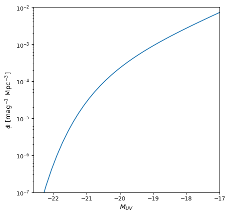

Schechter1D¶
-
class
astropy.modeling.powerlaws.Schechter1D(phi_star=1.0, m_star=- 20.0, alpha=- 1.0, **kwargs)[source]¶ Bases:
astropy.modeling.Fittable1DModelSchechter luminosity function (Schechter 1976), parameterized in terms of magnitudes.
- Parameters
Notes
Model formula (with \(\phi^{*}\) for
phi_star, \(M^{*}\) form_star, and \(\alpha\) foralpha):\[n(M) \ dM = (0.4 \ln 10) \ \phi^{*} \ [{10^{0.4 (M^{*} - M)}}]^{\alpha + 1} \ \exp{[-10^{0.4 (M^{*} - M)}]} \ dM\]phi_staris the normalization factor in units of number density.m_staris the characteristic magnitude where the power-law form of the function cuts off into the exponential form.alphais the power-law index, defining the faint-end slope of the luminosity function.References
- 1
Schechter 1976; ApJ 203, 297 (https://ui.adsabs.harvard.edu/abs/1976ApJ…203..297S/abstract)
- 2
Examples
from astropy.modeling.models import Schechter1D import astropy.units as u import matplotlib.pyplot as plt import numpy as np phi_star = 4.3e-4 * (u.Mpc ** -3) m_star = -20.26 alpha = -1.98 model = Schechter1D(phi_star, m_star, alpha) mag = np.linspace(-25, -17) fig, ax = plt.subplots() ax.plot(mag, model(mag)) ax.set_yscale('log') ax.set_xlim(-22.6, -17) ax.set_ylim(1.e-7, 1.e-2) ax.set_xlabel('$M_{UV}$') ax.set_ylabel('$\phi$ [mag$^{-1}$ Mpc$^{-3}]$')
Attributes Summary
This property is used to indicate what units or sets of units the evaluate method expects, and returns a dictionary mapping inputs to units (or
Noneif any units are accepted).Names of the parameters that describe models of this type.
Methods Summary
evaluate(mag, phi_star, m_star, alpha)Schechter luminosity function model function.
fit_deriv(mag, phi_star, m_star, alpha)Schechter luminosity function derivative with respect to parameters.
Attributes Documentation
-
alpha= Parameter('alpha', value=-1.0)¶
-
input_units¶
-
m_star= Parameter('m_star', value=-20.0)¶
-
param_names= ('phi_star', 'm_star', 'alpha')¶ Names of the parameters that describe models of this type.
The parameters in this tuple are in the same order they should be passed in when initializing a model of a specific type. Some types of models, such as polynomial models, have a different number of parameters depending on some other property of the model, such as the degree.
When defining a custom model class the value of this attribute is automatically set by the
Parameterattributes defined in the class body.
-
phi_star= Parameter('phi_star', value=1.0)¶
Methods Documentation
{kind=link}
{kind=link}